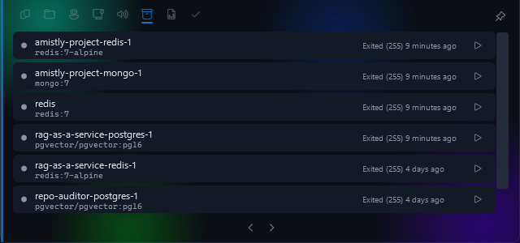
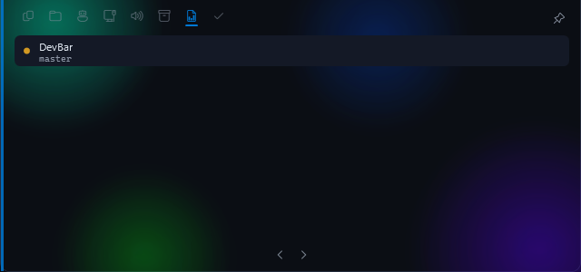
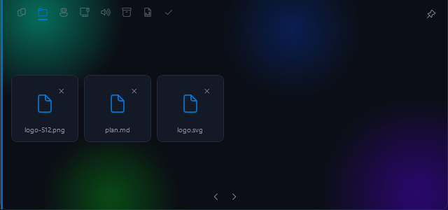
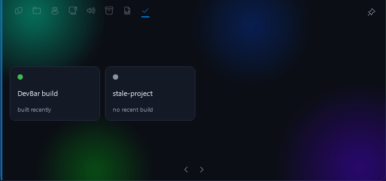

The toolbar that gets out of your way.
A 125-pixel pill at the top of your screen. Hover for ports, clipboard, containers and Claude sessions, or ask Jarvis.
Hover the pill. Move away and it's gone.
0.0%CPU while collapsed, measured
~130 MBWorking set with the bar idle
9Modules, plus an SDK for yours
0Accounts, trackers or telemetry
Nine things you check fifty times a day.
Each module is event-driven or polls only while its card is on screen. With the bar closed, none of it costs you anything.




Press the shortcut and talk. It answers out loud and can act, with a confirmation for anything destructive.
Real screenshots from Windows 11. Now Playing, the ninth module, controls whatever is playing system-wide.
Press a key. Talk. It does the thing.
Not a chatbot in a window. A voice loop wired into the modules, calling real tools on your machine and speaking before the answer is finished.
-
You press
A global shortcut you can rebind. The mic stays shut until then, or until you say "Hey Jarvis" with the on-device wake word on.
0 ms idle cost -
It hears
Streaming transcription that waits out your pauses, so you don't get cut off mid-thought.
~500 ms after you stop -
It thinks
Your words, your pinned profile and the tool list go to the first model in your chain. The next takes over on a rate limit.
~400 ms to first word -
It acts
27 tools across ports, containers, repos, clipboard, apps, screen, mail, calendar and shell. Destructive ones wait for your yes.
your call -
It speaks
Sentence by sentence, so it starts talking early. Talk over it to interrupt.
~350 ms to first sound
It knows your machine, and a bit about you.
What's on port 3000? Kill it.
Reads the real TCP table, then asks before killing.What does this error say?
Looks at your active window and quotes the line and file.Type this into the editor.
Dictation straight into whatever has focus.What's on today?
Google Calendar and Gmail, once you connect them.Remind me in twenty minutes to push.
Survives a restart, and speaks up when it's due.Remember that I use pnpm.
Lasting facts go in a local database you can read and delete.
a real turn, from the trace log
// DEVBAR_JARVIS_TRACE=1 state Listening -> Thinking llm groq:openai/gpt-oss-120b (1589 tok) tools=[set_reminder{"minutes":0.25, "text":"stretch"}] reminder armed: 'stretch' in 15s llm groq:openai/gpt-oss-120b "All set, Vivek. I'll nudge you in fifteen seconds." state Thinking -> Speaking ...15s later announce: Reminder: stretch.
Every action Jarvis takes shows up as a chip on the card, and in a trace log you can switch on. Nothing happens invisibly.
Built to run on free tiers.
DevBar has no server and resells nothing. You paste your own keys, encrypted on your machine with Windows DPAPI. The voice can run entirely offline.
Groq
The brain. gpt-oss-120b first, 20b as the backup.
free tier
Google Gemini
Fallback brain, vision for your screen, and web search.
free tier
Piper, on your PC
The voice, running locally at about 20× real time.
free forever
Deepgram
Streaming speech recognition, and the Aura-2 voice.
usage-based
Anything else
OpenAI, Anthropic, Cerebras, OpenRouter or Ollama. Drop them into the chain and reorder.
optional
Local by default. Honest about the rest.
A voice assistant that can read your mail should be exact about what leaves your computer. Here it is.
Never leaves your PC
- API keys and Google tokensDPAPI-encrypted, readable only by your Windows account.
- Memory and remindersOne SQLite file you can open, edit or delete.
- Wake-word listeningAn on-device model. Nothing is sent until it hears you.
- Your mail and calendarFetched to answer, never stored or indexed.
- UsageThere's no telemetry to send, and no server to send it to.
Sent only while you're talking
- Your voiceTo speech-to-text, for the length of the conversation.
- Your words, pinned profile and tool resultsTo the model you chose.
- A screenshotTo the vision model, only when you ask about the screen.
- The reply textTo the cloud voice, unless you pick a local one.
A module takes an afternoon.
DevBar is MIT licensed. Drop a compiled module into %LOCALAPPDATA%\DevBar\modules\ and it appears as a tab. One hard rule: do nothing between OnCollapsed and the next OnExpanded.
IDevBarModule.cs
public interface IDevBarModule { // Stable id, used in config. string Id { get; } string DisplayName { get; } string IconGlyph { get; } // Built once, lazily, on first view. UserControl BuildCard(); // Paged in: start timers, fetch data. void OnExpanded(); // Paged out: stop everything. Go quiet. void OnCollapsed(); }
Write a module
A Jira strip, a GPU meter, a standup timer. If you check it daily, it belongs on the bar.
Pick up an issueBugs, module ideas and rough edges live in the tracker. Small, self-contained work is labelled.
Fork itClone, dotnet run, and the bar is on your screen in a minute. No secrets needed to build.
On your screen in about a minute.
No admin rights. Jarvis is optional, and the bar works without a single API key.
-
Get the build
Grab the Windows installer from GitHub Releases, or build it with the .NET 8 SDK.
git clone https://github.com/Vivek-C-Shah/DevBar cd DevBar dotnet run --project src/DevBar
-
Hover the top edge
The pill sits centred at the top of your primary screen. Hover it, page through the tabs, pin it if you're waiting on something. Settings live in one file.
%LOCALAPPDATA%\DevBar\config.json
-
Wake Jarvis up
Optional. Open the Jarvis tab, click the gear, paste a Deepgram key and a free Groq key. Then press the shortcut and talk.
Ctrl + Alt + Space
Windows 10 or 11. MIT licensed. No account, ever.
Built for people who live in terminals.
Free, open source, and quiet enough to leave on your screen all day. If you build something on top of it, send a pull request.